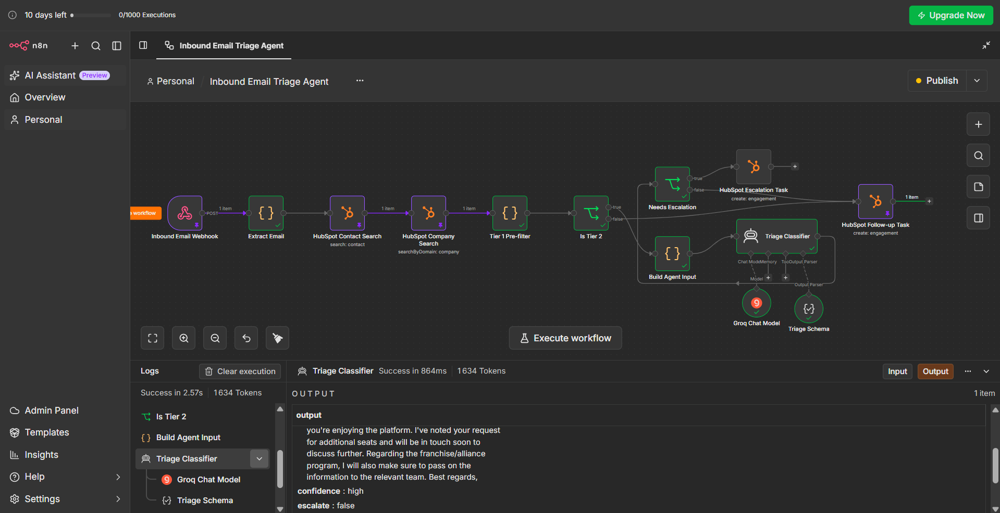
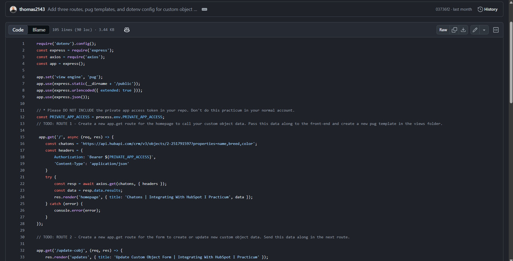
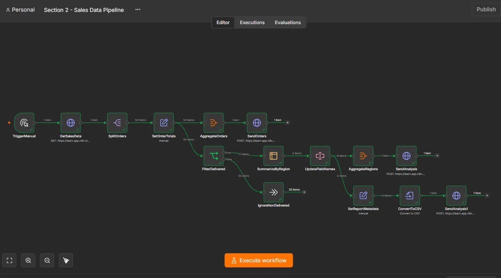
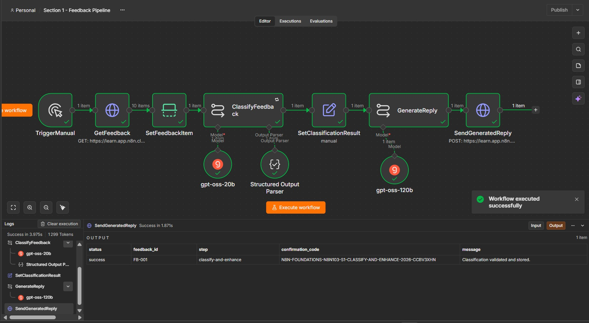
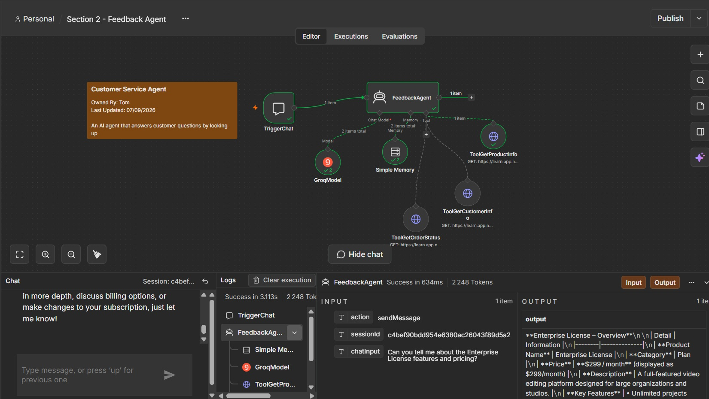
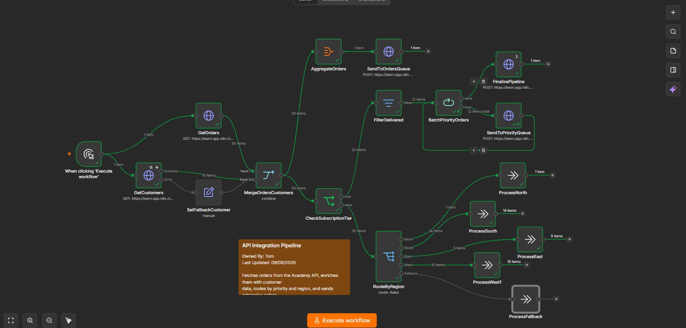
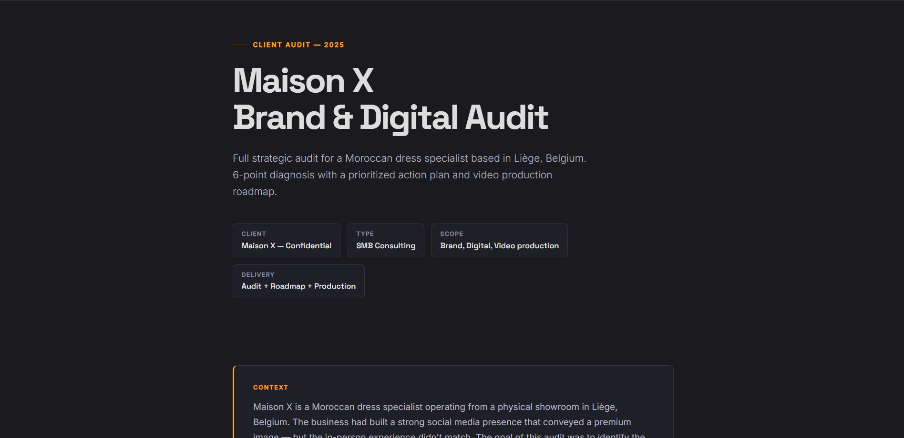

Work Samples
TechDrive — Selective Ticket Routing with Statistical Guarantees
67% → 0%target-miss rate: naive tuning vs risk control
95.2%best achievable analytics quality, not 100%
12tests targeting the report's claims
A public technology task Astana Hub published for TechDrive LLC, an Almaty company, that I chose to take on end to end: replace manual Service Desk ticket sorting with an AI classifier hitting 95% accuracy and "100% reliable" analytics. I built the threshold-setting mechanism with conformal risk control and stress-tested it, proving what the brief actually left unspecified, and that its "100% reliable" target was mathematically impossible.
The context —
Astana Hub published a public technology task for TechDrive LLC, an Almaty company, and I took it on end to end, on my own initiative: replace manual sorting of Service Desk tickets with an AI model that classifies and routes them. The brief asked for 95% routing accuracy, an 85% confidence gate, and analytics that would be 100% reliable.
The insight — Routing is not one number, it's two that trade off: coverage (tickets routed without a human) and precision (routed tickets sent to the right team). "95% accuracy" isn't a spec until you say what coverage it leaves, and "100% reliable analytics" cannot exist, because the human fallback is the least accurate path in the system, the very source of the bad tags the brief wants fixed.
What I built and measured — The threshold-setting mechanism, implemented end to end and stress-tested. Naive threshold-tuning on held-out data misses its target in 67% of trials; risk control never does, at a cost of 4 to 9 points of coverage. Switching from a Hoeffding to an empirical Bernstein bound, and from Bonferroni to fixed sequence testing, were both decided by measurement rather than preference. Best achievable analytics quality is 95.2%, not 100%. Only 1 category in 53 has the data to carry its own guarantee.
The finding I didn't expect — Two kinds of drift, and only one is visible. When the ticket mix shifts, coverage falls and the guarantee holds: the system pays in automation, not in mistakes. When the taxonomy is redefined, coverage doesn't move by a tenth of a point while the error rate triples. Nothing inside the system detects the second kind, which is what turned feedback capture from a refinement into a requirement.
Limits — A measurement you cannot check is not a measurement. The encoder is TF-IDF, not the multilingual model production needs; the corpus is newswire, cleaner than real tickets. Three findings from an earlier draft turned out to be artifacts of bugs the test suite caught, one already recommended for the proposal. They're in the report for the same reason.
The insight — Routing is not one number, it's two that trade off: coverage (tickets routed without a human) and precision (routed tickets sent to the right team). "95% accuracy" isn't a spec until you say what coverage it leaves, and "100% reliable analytics" cannot exist, because the human fallback is the least accurate path in the system, the very source of the bad tags the brief wants fixed.
What I built and measured — The threshold-setting mechanism, implemented end to end and stress-tested. Naive threshold-tuning on held-out data misses its target in 67% of trials; risk control never does, at a cost of 4 to 9 points of coverage. Switching from a Hoeffding to an empirical Bernstein bound, and from Bonferroni to fixed sequence testing, were both decided by measurement rather than preference. Best achievable analytics quality is 95.2%, not 100%. Only 1 category in 53 has the data to carry its own guarantee.
The finding I didn't expect — Two kinds of drift, and only one is visible. When the ticket mix shifts, coverage falls and the guarantee holds: the system pays in automation, not in mistakes. When the taxonomy is redefined, coverage doesn't move by a tenth of a point while the error rate triples. Nothing inside the system detects the second kind, which is what turned feedback capture from a refinement into a requirement.
Limits — A measurement you cannot check is not a measurement. The encoder is TF-IDF, not the multilingual model production needs; the corpus is newswire, cleaner than real tickets. Three findings from an earlier draft turned out to be artifacts of bugs the test suite caught, one already recommended for the proposal. They're in the report for the same reason.
PythonConformal PredictionRisk ControlDrift Analysispytest
MiddleCorp — AI-Driven Inbound Lead Strategy
50–500inbound leads/day routed across 4 segments
3-tiercascade: rules → AI agent → human
Liven8n prototype, real API calls end to end
A response to a real technical challenge: MiddleCorp's HubSpot setup misroutes leads and bottlenecks on manual qualification. I redesigned the routing across four segments on native HubSpot, then designed an AI agent for the ambiguous emails rules can't handle, with injection defense, an off-switch, and a working n8n prototype tested against live APIs. I presented this design to a technical panel and defended its trade-offs under direct questioning.
The context —
MiddleCorp is a fast-growing B Corp processing 50–500 inbound leads daily. The existing HubSpot setup can't keep pace: enterprise leads get misrouted, response times slip, qualification is a manual bottleneck. The brief had two parts, redesign the routing logic, and design an AI agent for the cases rules can't handle.
Part 1 — the routing architecture — A decision flow across four segments (Partner, existing customer, Enterprise, SMB) with a strict order of evaluation, built entirely on native HubSpot mechanisms, no custom code. Every edge case has defined handling: missing data, SLA breach, staff absence, plus a human feedback loop where a rep who disagrees with a routing decision tags the reason, which feeds the agent's audit.
Part 2 — the AI agent — A three-tier cascade (rule-based pre-filter → AI agent → human), the established production pattern for cutting LLM cost without losing quality on hard cases. The agent only sees free-text, ambiguous, multi-intent emails. CRM data and untrusted email text are separated inside XML tags, a stronger injection defense than plain-language separation, hardened further after adversarial testing surfaced an XML-escaping bypass that I then fixed. Multilingual handling, budget tracking, guardrails, evaluation metrics and off-switch criteria are all specified, not hand-waved.
Trade-offs — I considered a second AI layer to verify each draft before human review, then rejected it: a verifier carries the same failure risk as the agent it checks, and every draft already requires human approval before sending. It would add cost and latency and a false sense of security for no real gain. The human approval step is where the real safety lives.
Built under a real constraint — Mid-design, Groq announced the decommission of the originally validated model. The platform-choice section handles it head-on: a default provider for cost, EU-sovereignty fallbacks, a self-hosted last resort, and a direct answer to "why not HubSpot's native Breeze agent?". A working prototype was then built in n8n from the system prompt and tested end-to-end against real APIs.
Limits — One thing doesn't fully hold yet: if the business redefines a segment threshold, keeping the AI agent aligned means updating the prompt as part of that change process, since there's no automatic safeguard that catches it. It's simple to build in, I just haven't yet, and I'd rather say so than pretend it's handled.
Part 1 — the routing architecture — A decision flow across four segments (Partner, existing customer, Enterprise, SMB) with a strict order of evaluation, built entirely on native HubSpot mechanisms, no custom code. Every edge case has defined handling: missing data, SLA breach, staff absence, plus a human feedback loop where a rep who disagrees with a routing decision tags the reason, which feeds the agent's audit.
Part 2 — the AI agent — A three-tier cascade (rule-based pre-filter → AI agent → human), the established production pattern for cutting LLM cost without losing quality on hard cases. The agent only sees free-text, ambiguous, multi-intent emails. CRM data and untrusted email text are separated inside XML tags, a stronger injection defense than plain-language separation, hardened further after adversarial testing surfaced an XML-escaping bypass that I then fixed. Multilingual handling, budget tracking, guardrails, evaluation metrics and off-switch criteria are all specified, not hand-waved.
Trade-offs — I considered a second AI layer to verify each draft before human review, then rejected it: a verifier carries the same failure risk as the agent it checks, and every draft already requires human approval before sending. It would add cost and latency and a false sense of security for no real gain. The human approval step is where the real safety lives.
Built under a real constraint — Mid-design, Groq announced the decommission of the originally validated model. The platform-choice section handles it head-on: a default provider for cost, EU-sovereignty fallbacks, a self-hosted last resort, and a direct answer to "why not HubSpot's native Breeze agent?". A working prototype was then built in n8n from the system prompt and tested end-to-end against real APIs.
Limits — One thing doesn't fully hold yet: if the business redefines a segment threshold, keeping the AI agent aligned means updating the prompt as part of that change process, since there's no automatic safeguard that catches it. It's simple to build in, I just haven't yet, and I'd rather say so than pretend it's handled.
HubSpot APIn8nTiered LLM routingPrompt EngineeringInjection defenseRevOps
View the deck

Live execution — n8n · Groq · HubSpot
Meridian CA — Grounded RAG Assistant
0.978behaviour accuracy over 45 labelled cases
0.000hallucination rate, measured not estimated
$0.0024per passing query
A grounded RAG pre-sales assistant over a martech knowledge base. Most RAG demos answer even when the base doesn't cover the question; this one treats refusal and escalation as first-class outcomes, traces every claim to a cited chunk, and proves it with a measured hallucination rate of zero.
The problem —
A pre-sales assistant over a martech vendor's knowledge base. Most RAG demos fail silently on one case: a question the base doesn't cover retrieves a chunk that sounds related, and the model answers anyway.
The approach — Three permitted behaviours instead of two: answer when a chunk holds the fact, escalate when the boundary is documented but the fact isn't public (pricing, SLAs), refuse when nothing covers it. Every claim traced to a cited chunk, with all retrieval candidates and their distances shown in the interface.
Technical choices — Gemini embeddings + Gemini Flash, Groq fallback on timeout or 5xx. No vector DB (44 chunks is an in-memory matrix), vectors pre-computed at build time, distance ceiling calibrated off the eval distribution rather than guessed. Embedding calls never fall back, because vectors from different models compare unrelated geometries.
Evidence — 45 labelled cases, 0.978 behaviour accuracy, 0.000 hallucination rate, $0.0024 per passing query. Measured, not estimated, with a retrieval-only ablation and a regression suite.
Limits — One escalation case fails reproducibly: it refuses instead of routing. Left unpatched on purpose, tightening the prompt to fix it would convert legitimate refusals into escalations, trading a mild defect for a worse one. A named, understood failure is worth more than a 100% bought by tuning the prompt until the test set passes.
The approach — Three permitted behaviours instead of two: answer when a chunk holds the fact, escalate when the boundary is documented but the fact isn't public (pricing, SLAs), refuse when nothing covers it. Every claim traced to a cited chunk, with all retrieval candidates and their distances shown in the interface.
Technical choices — Gemini embeddings + Gemini Flash, Groq fallback on timeout or 5xx. No vector DB (44 chunks is an in-memory matrix), vectors pre-computed at build time, distance ceiling calibrated off the eval distribution rather than guessed. Embedding calls never fall back, because vectors from different models compare unrelated geometries.
Evidence — 45 labelled cases, 0.978 behaviour accuracy, 0.000 hallucination rate, $0.0024 per passing query. Measured, not estimated, with a retrieval-only ablation and a regression suite.
Limits — One escalation case fails reproducibly: it refuses instead of routing. Left unpatched on purpose, tightening the prompt to fix it would convert legitimate refusals into escalations, trading a mild defect for a worse one. A named, understood failure is worth more than a 100% bought by tuning the prompt until the test set passes.
RAGGemini embeddingsGemini FlashGroq fallbackEval harnessVercel serverless
Debrief — Pre-call brief generator
8h → minutescall prep time, per account
6serverless functions in production
Livereal users, Stripe billing
CSMs lose hours before every call reconstructing account context from CRM notes, emails, tickets and Slack. Paste it all in, unformatted, and Debrief returns a structured brief: timeline, open commitments, risk signals, sentiment and a tailored opening line. A shipped product with auth, persistence and Stripe billing.
The problem —
CSMs spend up to 8 hours before every call piecing together context from CRM notes, emails, support tickets, and Slack threads. This is a real challenge and doing that for each client can be exhausting.
What I built — Paste everything you have, call logs, emails, tickets, messages with zero formatting required. Debrief generates a complete brief: account timeline, open commitments, risk signals (sponsor changes, budget reviews, silent periods), sentiment read, and a suggested opening line tailored to where the account stands. Walk into any QBR, renewal, or escalation fully prepared.
What you track over time — Save accounts between sessions. The AI sees the full history on the next paste, so the longer you use it on an account, the richer the brief. A weekly watchlist surfaces which saved accounts need attention.
Technical choices — Six serverless functions on Vercel handle the full flow: brief generation, call summary, follow-up email, watchlist scoring and a Stripe webhook. The Groq API key stays server-side, never exposed to the client. Groq's gpt-oss-120b powers the reasoning. Supabase handles auth and account persistence. The Stripe webhook verifies its signature before unlocking paid access.
A problem worth solving — Reasoning models spend tokens thinking before they answer, out of the same budget as the response. On long notes, the model would exhaust it mid-reasoning and return nothing. The fix was three-part: cap the reasoning effort, keep the thinking out of the payload, and enforce a token floor server-side so a small client value can't reintroduce the bug. A truncated response still gets one retry before failing with the real reason, not "unexpected end of JSON".
Limits — The anonymous rate limit lives in memory, so it resets on cold start: it slows abuse down without truly stopping it, and a reliable limit would need a shared store like Redis. And timeline dates are taken from the notes as written, so undated notes produce undated entries. I know about both, they're in the repo as trade-offs I chose to leave for now.
What I built — Paste everything you have, call logs, emails, tickets, messages with zero formatting required. Debrief generates a complete brief: account timeline, open commitments, risk signals (sponsor changes, budget reviews, silent periods), sentiment read, and a suggested opening line tailored to where the account stands. Walk into any QBR, renewal, or escalation fully prepared.
What you track over time — Save accounts between sessions. The AI sees the full history on the next paste, so the longer you use it on an account, the richer the brief. A weekly watchlist surfaces which saved accounts need attention.
Technical choices — Six serverless functions on Vercel handle the full flow: brief generation, call summary, follow-up email, watchlist scoring and a Stripe webhook. The Groq API key stays server-side, never exposed to the client. Groq's gpt-oss-120b powers the reasoning. Supabase handles auth and account persistence. The Stripe webhook verifies its signature before unlocking paid access.
A problem worth solving — Reasoning models spend tokens thinking before they answer, out of the same budget as the response. On long notes, the model would exhaust it mid-reasoning and return nothing. The fix was three-part: cap the reasoning effort, keep the thinking out of the payload, and enforce a token floor server-side so a small client value can't reintroduce the bug. A truncated response still gets one retry before failing with the real reason, not "unexpected end of JSON".
Limits — The anonymous rate limit lives in memory, so it resets on cold start: it slows abuse down without truly stopping it, and a reliable limit would need a shared store like Redis. And timeline dates are taken from the notes as written, so undated notes produce undated entries. I know about both, they're in the repo as trade-offs I chose to leave for now.
Groq APIgpt-oss-120bSupabase authStripe webhooksVercel serverless
Pulse — Implementation Health Tracker
4health dimensions scored per project
<60sfrom open to working, no onboarding
Live6 serverless functions, relational backend
When a retailer rolls out SaaS across countries, senior PMs juggle 4 to 6 implementations at once and live with one question: which is about to break? Pulse scores each project's health across four dimensions and runs an independent timeline per site, so France-ahead, Poland-behind is visible at a glance instead of buried in spreadsheets.
The problem —
When a retailer like Mango or Decathlon rolls out a new SaaS platform across multiple countries, it's 6 to 12 months of phases, stakeholders, integrations, and go-live pressures, all happening at once. Senior PMs live with one constant question: which of my projects is about to break and where do I stand in all of this?
What I built — Pulse tracks SaaS retail implementations from day one to post go-live. Every project gets a live health score across four dimensions, stakeholder alignment, delivery confidence, product adoption and timeline adherence. For multi-country and multi-location rollouts, each site runs its own independent timeline in parallel: France ahead, Poland behind, UK on track, visible at a glance without digging through spreadsheets.
Who it's for — Senior PMs and Implementation Managers running complex SaaS deployments for international retail clients, 4 to 6 projects simultaneously, needing a single source of truth that doesn't require a 3-week onboarding.
Technical choices — Six serverless functions on Vercel proxy every call to Groq and Supabase, so no API key ever reaches the client. A Supabase Postgres database holds the relational model: projects, sites, milestones, log entries and note sessions, each project linked to its own independent site timelines. Auth is token-based, every data call scoped to the logged-in user. Groq's gpt-oss-20b powers the AI debrief.
A design choice — One project fetch returns everything, its sites, milestones, log entries and note sessions, in a single request rather than one call per relation. And the AI debrief fails cleanly: a 25-second timeout aborts the call before Vercel kills the function, so the user gets "try a shorter input" instead of a cryptic crash. These are the kind of details that only matter once someone actually depends on the tool.
Limits — Auth uses Supabase's anon key on the client, so the real security boundary is Row Level Security, which has to be configured correctly for the key to be safe. And the health score composites four dimensions that a user enters rather than measures automatically, so it's only as good as what gets logged. I call both out in the repo rather than glossing over them.
What I built — Pulse tracks SaaS retail implementations from day one to post go-live. Every project gets a live health score across four dimensions, stakeholder alignment, delivery confidence, product adoption and timeline adherence. For multi-country and multi-location rollouts, each site runs its own independent timeline in parallel: France ahead, Poland behind, UK on track, visible at a glance without digging through spreadsheets.
Who it's for — Senior PMs and Implementation Managers running complex SaaS deployments for international retail clients, 4 to 6 projects simultaneously, needing a single source of truth that doesn't require a 3-week onboarding.
Technical choices — Six serverless functions on Vercel proxy every call to Groq and Supabase, so no API key ever reaches the client. A Supabase Postgres database holds the relational model: projects, sites, milestones, log entries and note sessions, each project linked to its own independent site timelines. Auth is token-based, every data call scoped to the logged-in user. Groq's gpt-oss-20b powers the AI debrief.
A design choice — One project fetch returns everything, its sites, milestones, log entries and note sessions, in a single request rather than one call per relation. And the AI debrief fails cleanly: a 25-second timeout aborts the call before Vercel kills the function, so the user gets "try a shorter input" instead of a cryptic crash. These are the kind of details that only matter once someone actually depends on the tool.
Limits — Auth uses Supabase's anon key on the client, so the real security boundary is Row Level Security, which has to be configured correctly for the key to be safe. And the health score composites four dimensions that a user enters rather than measures automatically, so it's only as good as what gets logged. I call both out in the repo rather than glossing over them.
Groq APIgpt-oss-20bSupabasePostgreSQLVercel serverless
Also built

Job Pipeline Tracker
A job-search pipeline: paste a job description, get structured data extraction plus a line-by-line CV-vs-JD fit analysis. Single Vercel function, deterministic JSON.

HubSpot Custom Objects — API Integration
The practicum behind my "Integrating With HubSpot" certification: a Node/Express app doing full CRUD on HubSpot custom objects through the CRM REST API v3, by code.

Sales Data Pipeline — n8n
An ETL workflow: pull sales data over HTTP, split, compute totals, branch on delivery status, summarize by region and export CSV. Branching logic and data transformation end to end.

AI Feedback Pipeline — n8n
A fixed AI flow: fetch customer feedback, classify it with an LLM, and generate a tailored reply. Chaining an LLM into an automated pipeline end to end.

AI Agent with tools — n8n
An autonomous agent that chooses which tool to call (orders, accounts, products) via function calling, with conversational memory. Decision-making, not a fixed path.

API Integration Pipeline — n8n
A resilient integration pipeline: fetch paginated orders and customers in parallel, merge them on a matching key, route by subscription tier and region, then batch enterprise orders to a priority queue. With retry logic and a fallback path when the customer API fails.

Maison X — Brand & Digital Audit
A full strategic audit for a Moroccan dress specialist: brand consistency, bio rewrite, Google Business strategy, competitive analysis and repositioning, delivered as a structured PDF.